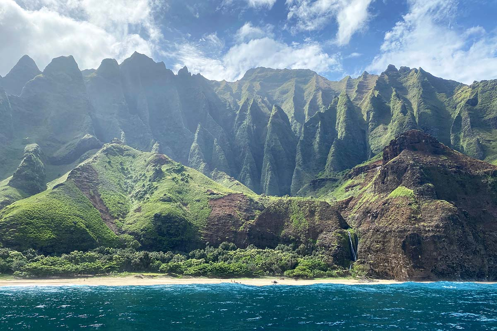
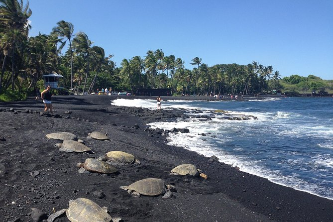

Hawai'i, the 50th state of the United States of America, is an archipelago located in the central Pacific Ocean. It is composed of eight main islands and numerous smaller islets and atolls. The main islands are Hawai'i (also known as the Big Island), Maui, O'ahu, Kaua'i, Moloka'i, Lana'i, Ni'ihau, and Kaho'olawe. Each island has its own unique geography, culture, and attractions, making Hawai'i a popular destination for tourists from around the world. In this post, I will focus on Kaua'i, O'ahu, Maui, Moloka'i, Lana'i, and the Big Island.
Kaua'i
Kaua'i, known as the "Garden Isle," is the oldest and northernmost of the main Hawaiian Islands. It is renowned for its lush landscapes, dramatic cliffs, and beautiful beaches. One of the most iconic features of Kaua'i is the Na Pali Coast, which boasts towering sea cliffs, hidden beaches, and lush valleys.
 The Na Pali Coast in northwest Kaua'iThe island is also home to Waimea Canyon, often referred to as the "Grand Canyon of the Pacific," which offers breathtaking views and hiking opportunities. Kaua'i's laid-back atmosphere and natural beauty make it a favorite among visitors seeking outdoor adventures and relaxation.
Another must-visit location on Kaua'i is the Wailua River, where visitors can explore waterfalls, lush valleys, and ancient Hawaiian temples. The island's rich cultural heritage is also evident in its local festivals, traditional music, and hula performances.
O'ahu
O'ahu, often referred to as "The Gathering Place," is the most populous of the Hawaiian Islands and home to the state capital, Honolulu. The island is known for its vibrant city life, beautiful beaches, and historical landmarks.
Oahu also has many botanical gardens that showcase the diverse plant life of Hawaii. One of the most popular is the Foster Botanical Garden in Honolulu, which features a wide variety of tropical plants, including rare orchids and towering palm trees. Another notable garden is the Ho'omaluhia Botanical Garden, located in Kaneohe, which offers stunning views of the Ko'olau Mountains and a peaceful setting for visitors to explore.

O'ahu is also home to the famous Waikiki Beach, known for its golden sands and excellent surfing conditions. Visitors can also explore historical sites such as Pearl Harbor, where they can learn about the events of World War II and pay tribute to those who served.
Maui, Moloka'i, and Lana'i
Maui, known as the "Valley Isle," is famous for its stunning beaches, lush landscapes, and the scenic Hana Highway. Visitors can explore the Haleakalā National Park, home to the dormant Haleakalā Volcano, which offers breathtaking sunrise views and unique hiking opportunities.
Haleakalā National Park is also home to a variety of unique flora and fauna, including the endangered nēnē (Hawaiian goose) and the silversword plant, which thrives in the park's high-altitude environment.
 Haleakalā, the crater of an inactive volcano in East Maui
Haleakalā, the crater of an inactive volcano in East Maui
Moloka'i, known as the "Friendly Isle," is less developed than some of the other islands, offering a more laid-back and authentic Hawaiian experience. Visitors can explore the Kalaupapa National Historical Park, which preserves the history of the leprosy settlement established in the 19th century. Lana'i, the "Pineapple Isle," is known for its luxury resorts and rugged landscapes. Visitors can explore the island's unique rock formations, such as the Garden of the Gods, and enjoy activities like snorkeling, hiking, and off-road adventures.
Hawai'i, the Big Island
Hawai'i, the Big Island, is the largest of the Hawaiian Islands and is known for its diverse landscapes, including active volcanoes, lush rainforests, and beautiful beaches. The island is home to Hawai'i Volcanoes National Park, where visitors can witness the power of Kīlauea and Mauna Loa, two of the world's most active volcanoes.
 A Black Sand Beach in Hawai'iThe Big Island also offers unique experiences such as stargazing at the Mauna Kea Observatories, exploring the lush Waipi'o Valley, and visiting the historic town of Hilo. The island's rich cultural heritage is celebrated through traditional Hawaiian music, dance, and festivals.